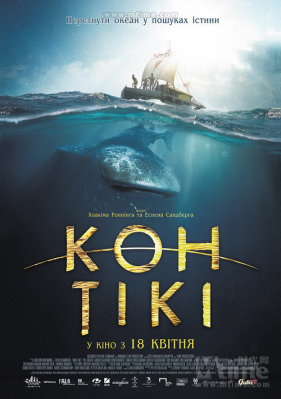

返回主页
《孤筏重洋》Kon-Tiki

上图的鱼叫鲸鲨（Butanding），最大的鱼（20米长）。所谓天狗翅（天九翅）的就是这种鱼的鱼鳍。该电影曾获奥斯卡提名，根据真实故事改编。
Kon-Tiki中的主角（几名科学家）在太平洋波利尼西亚群岛（Polynesia）调查时，综合研究了那里的文物遗迹和民间传说，以及太平洋的风向、潮流等，确信群岛上的第一批居民，是公元5世纪从拉丁美洲漂洋过海到那里去的。于是，他们完全按照古代印第安人木筏的式样，造了一只木筏。1947年4月，从秘鲁驾驶小木筏，横穿南太平洋航行四千多海里（1海里=1.85千米；1英里=1.61千米），历时三个多月，到达波利尼西亚。
乘木筏横渡太平洋的事实说明，人类曾经跨越白令海峡进入北美洲并一路南下，从南美洲出发去寻求新的天地。这一切就像当年的大探险（Great Discovery）和现在的NASA太空计划，我们需要更大的生存空间（Lebensraum），我们对未知充满好奇（curiosity）。
同样的还有《西太平洋的航海者》（Argonauts of the Western Pacific），马凌诺斯基（Malinowski）。Field study的地点在Papua New Guinea，菲律宾西南。
version:1.0; jobnet@188.com © retter2012.com